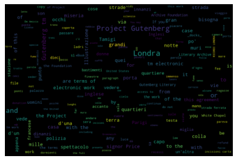

Testing Wordcloud lib¶
Simple Example¶
[1]:
import numpy as np
from wordcloud import WordCloud
text = "watts"
x, y = np.ogrid[:100, :300]
mask = (x - 150) ** 2 + (y - 150) ** 2 > 130 ** 2
mask = 255 * mask.astype(int)
wc = WordCloud(background_color="white", repeat=True, mask=mask)
wc.generate(text)
[1]:
<wordcloud.wordcloud.WordCloud at 0x10a465b10>
Printing¶
print image, the matplotlib way¶
[6]:
import matplotlib.pyplot as plt
plt.axis("off")
plt.imshow(wc, interpolation="bilinear")
plt.show()
PS saving locally needs to be done before calling .show()
[13]:
plt.axis("off")
plt.imshow(wc, interpolation="bilinear")
plt.savefig("f.png", dpi=100) # ps changing dpis has little improvements?
print image, the pil way (if you don’t have matplotlib)¶
[4]:
image = wc.to_image()
# image.show() # shows externally
from IPython.display import display
display(image) # shows inline
[5]:
# saving works
image.save(fp="wc.png") # saves locally
Reading local text example¶
[51]:
stpw = open(path.join(d, 'italian_stopwords.txt')).read()
[64]:
import os
from os import path
# get data directory (using getcwd() is needed to support running example in generated IPython notebook)
d = path.dirname(__file__) if "__file__" in locals() else os.getcwd()
stpw = open(path.join(d, 'italian_stopwords.txt')).read()
STOPWORDS = stpw.split("\n")
# Read the whole text.
text = open(path.join(d, 'pg27640 Ricordi di Londra, by Edmondo De Amicis.txt')).read()
# Generate a word cloud image
wordcloud = WordCloud(width=900, height=600, stopwords=STOPWORDS).generate(text)
# Display the generated image:
# the matplotlib way:
import matplotlib.pyplot as plt
plt.imshow(wordcloud, interpolation='bilinear')
plt.axis("off")
plt.savefig("text_cloud1.png", dpi=200)
# lower max_font_size
wordcloud = WordCloud(max_font_size=30, width=900, height=600, stopwords=STOPWORDS).generate(text)
plt.figure()
plt.imshow(wordcloud, interpolation="bilinear")
plt.axis("off")
plt.savefig("text_cloud2.png", dpi=200)
plt.show()

From frequencies¶
[29]:
!pip install multidict
Collecting multidict
Downloading multidict-4.7.5-cp37-cp37m-macosx_10_13_x86_64.whl (48 kB)
|████████████████████████████████| 48 kB 278 kB/s eta 0:00:01
Installing collected packages: multidict
Successfully installed multidict-4.7.5
[30]:
import multidict as multidict
import numpy as np
import os
import re
from PIL import Image
from os import path
from wordcloud import WordCloud
import matplotlib.pyplot as plt
def getFrequencyDictForText(sentence):
fullTermsDict = multidict.MultiDict()
tmpDict = {}
# making dict for counting frequencies
for text in sentence.split(" "):
if re.match("a|the|an|the|to|in|for|of|or|by|with|is|on|that|be", text):
continue
val = tmpDict.get(text, 0)
tmpDict[text.lower()] = val + 1
for key in tmpDict:
fullTermsDict.add(key, tmpDict[key])
return fullTermsDict
# get data directory (using getcwd() is needed to support running example in generated IPython notebook)
d = path.dirname(__file__) if "__file__" in locals() else os.getcwd()
# Read the whole text.
text = open(path.join(d, 'My Clippings.txt')).read()
# a dict of { "stringa" " : freq_no}
text_freq = getFrequencyDictForText(text)
# Generate a word cloud image
wordcloud = WordCloud(width=600, height=600).generate_from_frequencies(text_freq)
# Display the generated image:
# the matplotlib way:
import matplotlib.pyplot as plt
plt.imshow(wordcloud, interpolation='bilinear')
plt.axis("off")
plt.savefig("freq_cloud.png", dpi=100)
manually from a dict¶
[46]:
d = {'study': 5707,
'patients': 3579,
'effect': 3103,
'data': 2495,
'disease': 1899,
'factors': 2024,
}
wordcloud = WordCloud(width=600, height=600).generate_from_frequencies(d)
# Display the generated image:
# the matplotlib way:
import matplotlib.pyplot as plt
plt.imshow(wordcloud, interpolation='bilinear')
plt.axis("off")
plt.savefig("freq_cloud_from_dict.png", dpi=100)
manually from Dimcli concepts¶
[6]:
import matplotlib.pyplot as plt
import dimcli
dimcli.login()
dsl = dimcli.Dsl()
Dimcli - Dimensions API Client (v0.7)
Connected to: https://app.dimensions.ai - DSL v1.25
Method: dsl.ini file
[3]:
# moog synthesizers
concepts = dsl.query("""
search publications for "moog synthesizers" return publications[id+concepts_scores] limit 500
""").as_dataframe_concepts()
Returned Publications: 500 (total = 2036)
[4]:
temp = concepts.drop_duplicates("concept").sort_values("score_avg", ascending=False)
dd = temp[['concept', 'frequency']][:150].to_dict(orient="records")
# returns smth like this
# [{'concept': 'study', 'frequency': 5707},
# {'concept': 'patients', 'frequency': 3579},
d = {x['concept'] : x['frequency'] for x in dd}
[7]:
wordcloud = WordCloud(width=900, height=600).generate_from_frequencies(d)
plt.imshow(wordcloud, interpolation='bilinear')
plt.axis("off")
plt.savefig("freq_cloud_from_dimcli.png", dpi=300)
manually from Dimcli concepts - for a Researcher¶
[8]:
import matplotlib.pyplot as plt
import dimcli
dimcli.login()
dsl = dimcli.Dsl()
Dimcli - Dimensions API Client (v0.7)
Connected to: https://app.dimensions.ai - DSL v1.25
Method: dsl.ini file
[9]:
%dsldf search researchers where first_name="Michele" and last_name="Pasin"
Returned Researchers: 1 (total = 1)
[9]:
| first_name | last_name | research_orgs | orcid_id | id | |
|---|---|---|---|---|---|
| 0 | Michele | Pasin | [{'id': 'grid.10837.3d', 'longitude': -0.70955... | [0000-0001-8909-7766] | ur.013443041077.22 |
[13]:
#
concepts = dsl.query("""
search publications where researchers in ["ur.01312612572.33" ] return publications[id+concepts_scores] limit 1000
""").as_dataframe_concepts()
temp = concepts.drop_duplicates("concept").query("score_avg > 0.3").sort_values('frequency', ascending=False)
data = temp[['concept', 'frequency']][:150].to_dict(orient="records")
# --- returns smth like this
# => [{'concept': 'study', 'frequency': 5707},
# => {'concept': 'patients', 'frequency': 3579},
data_dict = {x['concept'] : x['frequency'] for x in data}
wordcloud = WordCloud(width=900, height=600).generate_from_frequencies(data_dict)
plt.imshow(wordcloud, interpolation='bilinear')
plt.axis("off")
plt.savefig("freq_cloud_for_researcher.png", dpi=300)
Returned Publications: 44 (total = 44)
[ ]: